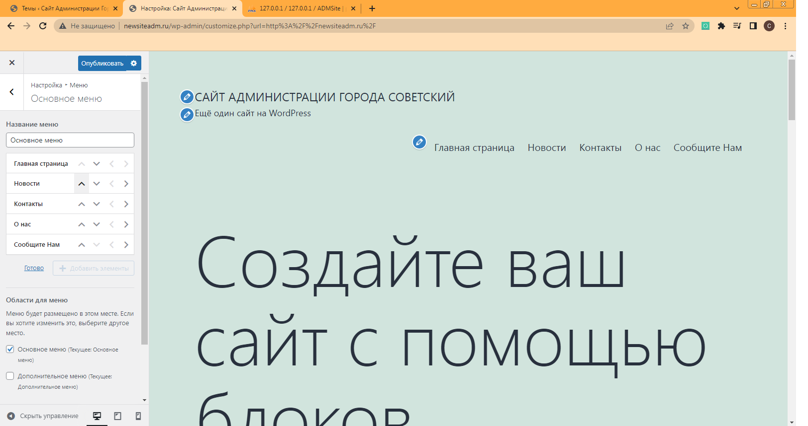

Страницы в WordPress добавляются очень легко. Для этого нажимаем на кнопку настроить. После этого открывается меню , выбираем вкладку «Меню», затем нажимаем на кнопку «Основное меню», затем кнопку добавить элементы. После этого можно ввести название страниц.
Рис 2.2 Добавление страниц сайта.
Вот такие страницы мы добавили на сайт.
made by Smirnov Nikita and ko in 2022